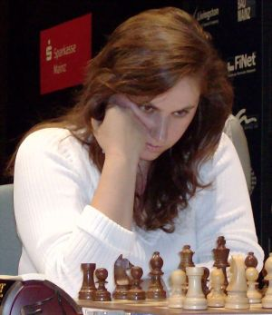

| A | B | C | D | E | F | G | H | ||
|---|---|---|---|---|---|---|---|---|---|
| 1 | 1 | ||||||||
| 2 | 2 | ||||||||
| 3 | 3 | ||||||||
| 4 | 4 | ||||||||
| 5 | 5 | ||||||||
| 6 | 6 | ||||||||
| 7 | 7 | ||||||||
| 8 | 8 | ||||||||
| A | B | C | D | E | F | G | H |
Magnus Carlsen : A legmagasabb Élő-pontszámot elért norvég versenyző A legmagasabb pontszámmal rendelkező világbajnok (2013−)
Gari Kaszparov: A legmagasabb Élő-pontszámot elért orosz versenyző Korábbi világbajnok (1985−2000) Az első versenyző, aki átlépte a 2800-as határt.

Polgár Judit : A legmagasabb Élő-pontszámot elért női versenyző